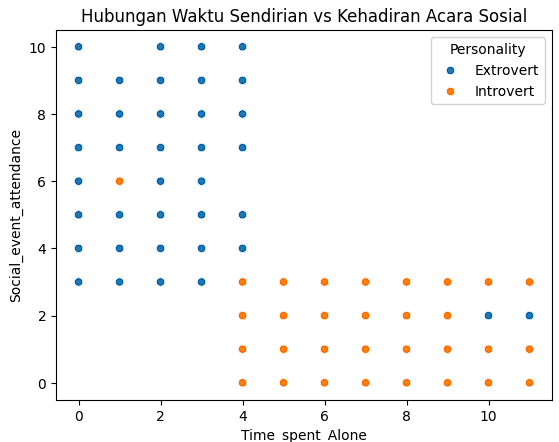
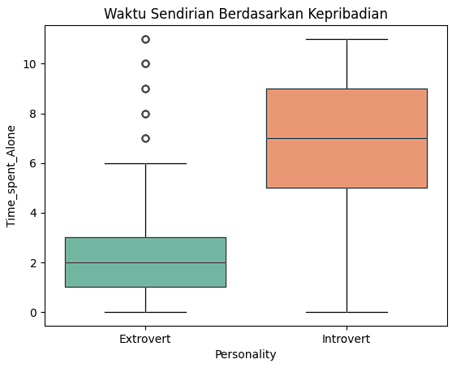
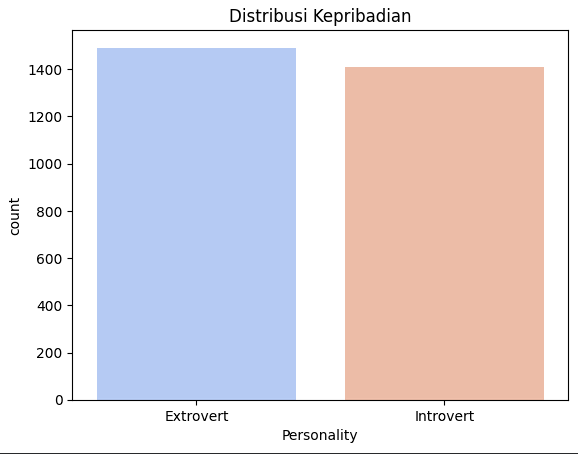

Analaisis Data Kepribadian
.

# Personality Dataset # Import library import pandas as pd import matplotlib.pyplot as plt import seaborn as sns # 1. Load dataset df = pd.read_csv('personality_dataset.csv') # 2. Cek data awal print(df.head()) # 3. Visualisasi distribusi Personality sns.countplot(x='Personality', data=df, palette='coolwarm') plt.title('Distribusi Kepribadian') plt.show() # 4. Boxplot Time_spent_Alone vs Personality sns.boxplot(x='Personality', y='Time_spent_Alone', data=df, palette='Set2') plt.title('Waktu Sendirian Berdasarkan Kepribadian') plt.show() # 5. Hitung rata-rata Time_spent_Alone per Personality print(df.groupby('Personality')['Time_spent_Alone'].mean()) # 6. Korelasi numerik (Time_spent_Alone dengan variabel lain) corr = df[['Time_spent_Alone']].corr() print("Korelasi numerik:\n", corr) # 7. Tambahan: Scatterplot dengan hue Personality sns.scatterplot(x='Time_spent_Alone', y='Social_event_attendance', hue='Personality', data=df) plt.title('Hubungan Waktu Sendirian vs Kehadiran Acara Sosial') plt.show()


